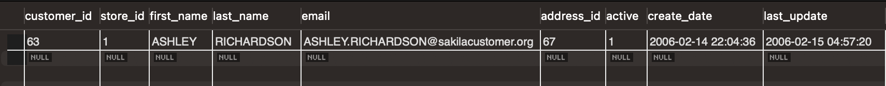
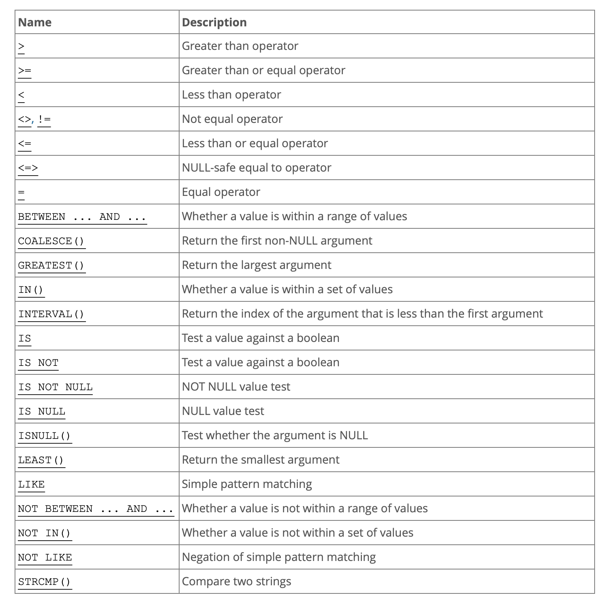

Keywords/Definitions
-
WHERE clause--
- AND
- OR
- equality comparisons
- inequality comparisons
- range comparisons
- lookup operators
Case Study
January 20, 2022
WHEREclause is a signifcant tool in querying to retrieve the correct data that is also delivered in farr more manageable amounts that returning such a large data-set.
SELECT * FROM customer WHERE first_name = 'Ashley'In our movie rental database, on the customer table, these are the results that are returned:  That's a nice short list!
It's not always that short though, and so sometimes we may want to find something more specific and we can combine
WHEREclauses to filter out even more data. Here we are using just a find
WHEREthe first name is equal to whichever name we have selected. We could also add in other filters by using the terms
ANDand
ORWhen additional terms are used, then the filtered search must return a boolean match (True or False) for each of the terms it is given.
Comparison Operators are the expression or operation that is used to make a comparison when filtering. It's similat to a child sorting blocks, and looking for the red one to go in the red slot, blue one to go in the blue slot, etc. When searching for data and making a filter request, we might be looking for:
SELECT customer_name
FROM customer
WHERE (price >= 100) AND (purchase_day = 'Saturday' OR purchase_day = 'Sunday')
Using dates and numeric values utlize a range condition, where it doesn't evaluate to only True/False, within that match there is a range it could be TRUE by... searching for something within a date range, for example, first quarter. Or searching within a specific number or alphabet range.
Using filter parametes within a
WHEREclause is essentially when deleting or updating data from a database. It helps target the correct piece of data so we aren't accidentally affecting the wrong item.
As we can see from the following table there are many different operators that could be used to accurately specify a search query.
